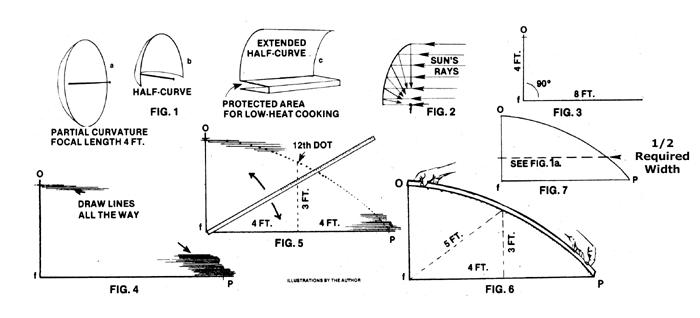
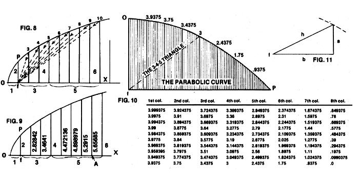

Solar energy is in! All the way in ... as a quick glance at almost any magazine, newspaper, or evening television news. cast will demonstrate. Everyone, it seems, is now interested in substituting some of the boundless energy from the sun for our increasingly expensive fossil fuels.
And that's relatively easy to do for a few fortunate folks . . . the ones with enough bucks in their bank account to just go out and buy the "latest and greatest" solar energy hardware on the market.
Most of us, however, have more ambition than money. In short, if we expect to harness the sun for our own personal use any time soon, we're probably going to have to go down into the basement or out into the workshop and build our own hardware. Which is where the rub all too frequently comes in: Far too many would-be constructors of do-it-yourself solar equipment are ready, willing, and able to fabricate the gear they want ... but they simply don't know where or how to begin .. . especially when it comes to one of the most efficient solar collection devices of all, the parabolic curve.
Ah, but that's exactly where I can be of help. I've been calculating, constructing, and working with parabolic curves for years and I've come to the conclusion that it's no wonder parabolics baffle so many would-be solar energy experimenters: The amount of downright false and misleading information about them currently in circulation is appalling.
Suppose, for instance, that you desire to create a parabolic mirror, or half-mirror, or extended half-curve of rectangular shape (see Fig. 1). You know you need to calculate and draw the supports and surface for the mirror you want . . . but that's about all you know. So you begin to look around and-hot dog!-you discover an article or an advertisement or some other piece of literature which glibly leads you to believe that almost any old curve will do the job.
Do not be fooled by such misinformation! A parabolic curve is the only curve that will collect the sun's rays over a broad surface and then-under conditions of ideal efficiency-direct all those rays to a single given spot or surface. No other curve or shape will do this. For maximum efficiency and maximum focus, your curve must be parabolic.
As an example of the misstatements I refer to, 1 direct your attention to George Salmon's works on conics, higher plane curves, analytic geometry, and higher algebra . . . which are considered to be standard authorities in the field by many knowledgeable experts. Yet, on page 199 of Salmon's Treatise on Conic Sections (6th Edition, Dover), Article 209 states that " . . . If we suppose one vertex and focus of an ellipse given, while its axis major increases without limit, the curve will ultimately become a parabola." THIS IS NOT TRUE! 1 also refer you to Article 214 on page 202 of the same book: " . . . and we shall show, in the present section, that a parabola may in every respect be considered as an ellipse, having one of its foci at this distance and the other at infinity." Again, NOT TRUE!
The following, however, IS true and is-I believe-described in the simplest way possible, while retaining all the accuracy of an exercise done by a licensed civil engineer.
Given: the focal length only. This can be any distance you want to work with and is nothing but the distance from the back of your planned curvature (see Fig. 2)-at the center-to the focus (the spot where the heat is to be directed). Let's say you've decided to use a focal length of four feet. A completed parabolic curve, across the focus, will have a diameter four times that focal length or, in this case, a diameter of 16 feet (4 X 4). A half-curve, then, will have a height of eight feet . . . and here's an easy way to seek that halfcurve:
Draw the focal line out to its required length on a large sheet of smooth paper (Kraft building paper is fine). Fig. 3 shows this focal length-Of-on the sheet of paper. It also shows a second line-fPdrawn at right angles to and twice as long (eight feet) as Of.
We know, of course, that the parabolic curve we're seeking will run, in some fashion, between points 0 and P. And, although we have a rough idea of the area in which that curve will fall, we're not yet sure of its exact course. So we're ready to get down to the finer definition of our curve, and we're going to begin that definition by drawing in a number of lines that are parallel to fP and spaced one inch apart (see Fig. 4). These lines need be put in only in the near vicinity of where our final curve must lie, but they should be measured and drawn accurately. You will, when finished with this step, have a total (counting iP) of 48 parallel lines drawn on your sheet of paper.
Now (Fig. 5) find an accurate straightedge that is at least twice as long as the focal length Of (or, to put it another way, at least as long as fP). Place the corner of one end of the straightedge precisely on point f and-taking care to keep that corner exactly on frotate the face of the straightedge from Of down to fP. As you touch each of the 48 parallel lines from the top down, add one inch to the length (48 inches) of Of and make a dot. (The first dot will be made on the first parallel line down and 49 inches from f, the second dot will be on the second parallel line down and 50 inches from f, etc.) Continue on until you scribe your last dot on the bottom line and 96 inches from f. The series of dots you've just made will define a parabolic curve with a four-foot focal length.
Now connect the dots by very accurately placing a flexible metal, plastic, or wooden strip across them and carefully draw. ing a line from O-cutting through all the scribed points in between-to P (Fig. 6).
This completed line is the curve you seek. It is NOT part of an ellipse. It is NOT part of a circle. It is NOT a hyperbolic. It is a true parabolic curve and you can now use it in the construction of your solar heating unit or cooker. By doubling the drawn curve back over the focal line (pick up point P, swing it over Of, and lay it down again an fP distance on the other side of Of), you can quickly and easily convert the eight-foot-long half-curve you've just drawn into a 16-foot-long full curve. When the focal line of this true parabolic curve is pointed precisely at the sun, ALL the Incoming solar rays which strike the curve and are reflected will focus at f . . . and, believe me, it gets HOT.
OK. Now for some variations. Suppose, for instance, that you want to construct a parabolic reflector which has the same focal length (four feet) of the curve we've just drawn . . . but a smaller diameter. Easy. Starting at the base line fp, just measure up as far as you like, slice off the bottom of the drawing, and keep the rest. (If you cut your drawing as shown in Fig. 7, the remaining portion of the curve can be used to build a collector much like the one shown in Fig. 1a.)
It's a little more complicated-but not really much more difficult-to extend a parabolic "dish" out to some endless dimension . . . while still retaining a specific focal length.
Using the focal length Of as one (1) unit, lay off on the extended line, OX, ANY number of unit lengths that you want. (See Fig. 8 in which, as you'll note, we've tilted our original-Figs. 3 through 7parabolic drawing 90° to the left to give us plenty of drawing space.)
If you'll look at Figs. 8 and 9 you'll note that at the end of each consecutive odd number on line OX, the next vertical line will always be the next EVEN number above the odd . . . while all the inbetween numbers will be fractional. (Example: The first odd numberl-on the base line is followed by a vertical line labeled 2. The second odd number-3-on the base line is followed by a vertical line labeled 4. And so on. And the vertical lines in between 2 and 4-2.82842 and 3.4641-are fractional.)
All right. Note also that the evenly numbered vertical lines (2, 4, 6, etc.)--the ones which separate the odd-numbered unit measurements (1, 3, 5, etc.)--are each longer than the preceding evenly numbered vertical line by the square root of 4 (the square root of 4 is 2, and vertical line 4 is 2 longer than vertical line 2, while vertical line 6 is 2 longer than vertical line 4, etc.).
If you'll study Fig. 9, you'll further note that the squares of each vertical line (both evenly numbered and fractional) form a very neat sequence, in which each square advances by exactly 4. (That Is: The square of vertical line 2 is 4, the square of vertical line 2.82842 is 8, the square of vertical line 3.4641 is 12, etc.)
Furthermore, if you're familiar with right triangles, you've probably already noticed that the hypotenuses beyond f also form a series, each one greater than the last by 1. (That Is: The hypotenuse-shown as a dotted line-of the triangle running from f along OX to vertical line 2.82842, up that vertical line and back down to f . . . is 3. The hypotenuse-again shown as a dotted line-of the triangle running from 1 along OX to vertical line 3.4641, up that vertical line and back down to f . . . Is 4. And so on.)
By computing and plotting out the squares for the vertical lines involved, then, you will have the precise distances from the base line to the curvature for a parabolic curve extending as many units out as you care to take it.
It's also very easy to double check any of these computations, since every right triangle within the curve will have a hypotenuse two units greater than its base. (That Is: Point A in Fig. 9 is a total of 7 units from f and is located at the base of a vertical line measuring 5.65685 units. Seven times seven equals 49 and 5.65685 squared is 32. Forty-nine plus 32 equals 81 and 9-which is two units greater than 7-is the root of 81.)
This order of numbers is a constant factor to any parabola. Or, to put it another way, should you want a parabola of ANY measurement, you have only to multiply or divide by the necessary number to obtain the new dimensions. (Example: I want a parabola with a focus of seven feet and I know that every number above was calculated with the focal length Of given as one (1) unit. Therefore, all I have to do to figure those same numbers for a focal length of seven feet is multiply by seven. And if I don't want feet, I can just as easily convert those numbers to meters, miles, or anything else I do want. The ratio will always be the same.)
OK. You can relax. The hard part is over. Now that you know HOW to calculate a parabolic curve of any size and/or width, I'm going to save you the trouble. The chart accompanying this article contains a list of measurements based on 10 verticals between each unit (this is, in short, a list of coordinates for perfectionists who want to lay out an absolutely accurate curve).
Please note that all of the fractional numbers on the chart are based on an Of of 4. To use them for ANY focal length, just divide by four and then multiply by the desired focal length. (Example: I want a focal length of 11. So I divide each number by 4 and then multiply the result by 11.) Remember, too, that the charted numbers represent points on the curvature measured up from the base in one-tenth intervals. That's cutting everything pretty fine, and you can skip a few of the points if you wish.
And here's one final tip about the accompanying chart: SAVE IT FOR FUTURE REFERENCE. To my knowledge, the figures you see here have never been printed before and they can save hours of math work for anyone who might ever want to lay out a true parabolic curve.
Of course, if you really dig math, here's a bit of far-out figuring that you can use to keep yourself occupied some rainy afternoon: In any right triangle formed in any half of a parabola and touching both the focus and the curve (Fig. 11), h plus a is always twice the focal length and-naturally-h2 minus a2 always equals b2. You can use those facts as further proof of exactness when scribing your next parabolic curve.
EDITOR'S NOTE: George Donald Graham, the author of this article, is also the author of Capture the Sun, a very interesting little paperback book (Enterprises Unlimited, Star Route, Ferndale, California 95536) that delves more deeply into the calculation and construction of parabolic solar energy devices. If you liked this article, you'll want to read the book. It's available for $2.50 plus 75! postage and handling from either the publisher or from Mother's Bookshelf.
|
 |
 |
|